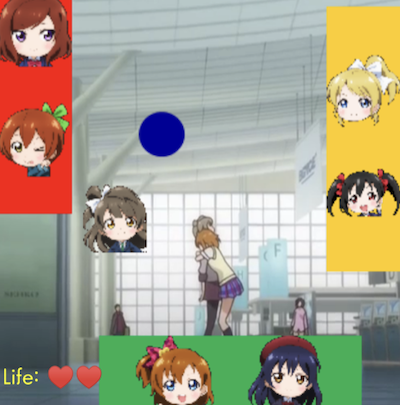
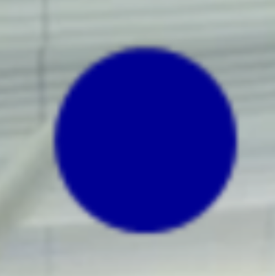

実装機能
|  |
バーを動く機能 下部のバーをタッチしてドラッグすると、四方のバーがすべて一緒に動きます。 |
|
ボールが動く機能 ボールが外に出ようとしています。 |
|
|  |
アイテムを作成し効果を発動する機能 ゲーム中に生成されるアイテムを食べると、バーの長さorボールの速度が変化する効果が発動されます。 |
社会に貢献しようとしたこと
クリエイティブなゲームを制作してリリースするので、ゲームをしながら一味違う楽しさを感じることができます。
クリエイティブなゲームを制作してリリースするので、ゲームをしながら一味違う楽しさを感じることができます。
背景と目的
最近、人々はスマートフォンを非常に多く使用しているので、創造的なスマートフォンゲームを作成して人々にサービスを提供するために、ゲーム開発者になることに備えて、私だけのゲームを制作するようになりました。
最近、人々はスマートフォンを非常に多く使用しているので、創造的なスマートフォンゲームを作成して人々にサービスを提供するために、ゲーム開発者になることに備えて、私だけのゲームを制作するようになりました。
学んだこと
- AndroidでViewとCanvasでグラフィックを描く方法を学びました。
- Androidアプリの実装方法を学びました。
進行手順
- 「Androidプログラミング」の本で、ViewとCanvasでグラフィックを描く例を実行しました。
- しかし、画像をグラフィカルに表示する方法、タッチを検出する方法など、わからないことが多いので、Googleで長く探してみました。
- 長い時間を探した最後にグラフィックを扱うさまざまな機能がわかりました。
- ボタンを押すとゲーム画面に移動します。
- このようにして目的のプログラムを実装できました。
- 数日後、Unityを勉強してから再びUnityにする必要があると思いました。 現業でもゲーム制作時に主にゲームエンジンを使用するからです。 進行手順はUnityもまったく同じでした。
能力強化のために最も努力したこと
Android Graphicでタッチ＆ドラッグ、衝突判定を利用したクリエイティブなゲーム制作
Android Graphicでタッチ＆ドラッグ、衝突判定を利用したクリエイティブなゲーム制作
全体構造

使用技術
Android, Java
Android, Java
開発環境
Android Studio
Android Studio